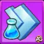
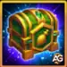
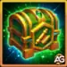
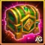
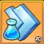
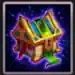

📿 シャーズ・オブ・ザ・パスト完全攻略
シャーズ・オブ・ザ・パストは、ヒーローウォーズ・アライアンスで開催される3日間の特別イベントです。キーパーズショップ（タリスマンショップ）と同時に開催され、タリスマンコインを使って強力なタリスマンを購入できます。イベントには、デイリーログイン、エメラルド消費、グランドアリーナ戦、ハイドラレイド、ルーンストーン消費、部隊訓練、レルムモンスター討伐を含む8つのクエストラインがあります。注目報酬は、賢者の交換クエストで6,000エメラルドを消費すると解放されるタリスマンです。
⚠️ 重要: シャーズ・オブ・ザ・パストに参加するには、レベル80でレルムモードを解放し、部隊訓練施設を建設し、研究レベル1以上に到達している必要があります。まずは レルムモード攻略ガイド を確認してください。
イベントの注目ポイント
 タリスマン - 注目報酬。賢者の交換クエストで6,000エメラルドを消費すると1個獲得できます
タリスマン - 注目報酬。賢者の交換クエストで6,000エメラルドを消費すると1個獲得できます タリスマンコイン - 複数のクエストで入手可能。キーパーズショップでさらにタリスマンを入手するために使います
タリスマンコイン - 複数のクエストで入手可能。キーパーズショップでさらにタリスマンを入手するために使います レリックの欠片 - 複数のクエストで入手できます
レリックの欠片 - 複数のクエストで入手できます カオスコア - エメラルド消費や部隊訓練で獲得できます
カオスコア - エメラルド消費や部隊訓練で獲得できます ルーンスフィア - グランドアリーナ、ハイドラ、国境の守護者クエストで入手できます
ルーンスフィア - グランドアリーナ、ハイドラ、国境の守護者クエストで入手できます
🏪 キーパーズショップ - タリスマンショップ活用法
キーパーズショップはこのイベントと同時開催され、タリスマンコインを使ってタリスマンを購入できます。ただし、イベントクエストだけで獲得できるタリスマンコインの量はかなり限られています。より多く集める最善の方法は、報酬ボックスを開けることです。
- 報酬ボックス1個 = 200エメラルド
- 報酬ボックス10個 = 1,800エメラルド
- 報酬ボックスからは、スキンストーン、ブロンズチェスト、ゴールド、そしてタリスマンコインがドロップします
💡 ヒント: 報酬ボックスを3回10連で開けると5,400エメラルド必要です。これにイベントクエストでの日々のエメラルド消費を組み合わせれば、3日間の開催中に賢者の交換の報酬であるタリスマンを受け取るための6,000エメラルド条件へ簡単に到達できます。タリスマンへ投資する前に、どれが本当に自分のチームに価値があるかを確認するために タリスマンガイド を見ておきましょう。
🔑 おすすめのエメラルド消費方法: アウトランド3で使う（50回以上）か、1日1回10連を開ける（1,800/日）か、アレクサンドレ・ゲームズのタワー攻略を使って追加エネルギーを購入しましょう。こうするとイベントのシーズンパス報酬も同時に進められます。
1. ドミニオンの呼び声
目的: イベント期間中にログインして、アーティファクトコイン、シーズンポイント、軍隊訓練マニュアルを獲得します。
戦略: イベント3日間のそれぞれでログインするだけで進みます。短時間のログインでもカウントされます。3つのログイン段階はすべて3日間の開催期間内に達成可能です。
このクエストはイベントの3日間で達成できます。
| タスク（ログイン） | 報酬1 | 報酬2 | 報酬3 |
|---|---|---|---|
| 特別イベント中に1回ログイン |  アーティファクトコイン x300 アーティファクトコイン x300 |  シーズンポイント x20 シーズンポイント x20 |  射手のマニュアル x1 射手のマニュアル x1 |
| 特別イベント中に2回ログイン | アーティファクトコイン x300 | シーズンポイント x20 |  槍兵のマニュアル x1 槍兵のマニュアル x1 |
| 特別イベント中に3回ログイン | アーティファクトコイン x300 | シーズンポイント x20 |  歩兵のマニュアル x1 歩兵のマニュアル x1 |
| 合計（3日間） | アーティファクトコイン x900 | シーズンポイント x60 | マニュアル3冊 |
2. 賢者の交換
目的: エメラルドを消費して、アーティファクトコイン、シーズンポイント、カオスコア、レリックの欠片、研究加速、そして6,000エメラルド到達時にタリスマンを獲得します。
戦略: 重要な目標は6,000エメラルドです。ここで注目のタリスマンが解放されます。アウトランドでの消費、タワーでの追加エネルギー購入、報酬ボックスの開封はすべてカウントされます。Hub Storeでエメラルドを購入するなら、alexandregames コードを使いましょう。追加費用はかからず、このような攻略の継続にもつながります。
このクエストは3日間のイベント中に達成できます。
| タスク（エメラルドを使う） | 報酬1 | 報酬2 | 報酬3 |
|---|---|---|---|
| エメラルドを400使う | アーティファクトコイン x200 | カオスコア x1 |  研究加速5分 x4 研究加速5分 x4 |
| エメラルドを1,200使う | アーティファクトコイン x300 | シーズンポイント x25 | 研究加速5分 x8 |
| エメラルドを2,000使う | アーティファクトコイン x400 | カオスコア x1 |  研究加速1時間 x1 研究加速1時間 x1 |
| エメラルドを3,200使う | アーティファクトコイン x500 | シーズンポイント x25 | 研究加速1時間 x1 |
| エメラルドを4,400使う | アーティファクトコイン x600 | カオスコア x2 | 研究加速1時間 x2 |
| エメラルドを6,000使う ⭐ | アーティファクトコイン x750 | シーズンポイント x50 | タリスマン x1 ⭐ |
| エメラルドを8,000使う | アーティファクトコイン x1,500 | カオスコア x2 | 研究加速1時間 x2 |
| エメラルドを10,000使う | アーティファクトコイン x2,300 | シーズンポイント x50 | 研究加速1時間 x3 |
| エメラルドを14,000使う | レリックの欠片 x4 | アーティファクトコイン x3,500 | カオスコア x3 |
| エメラルドを19,000使う | アーティファクトコイン x3,800 | シーズンポイント x74 | 研究加速1時間 x3 |
| エメラルドを26,000使う | アーティファクトコイン x4,500 | カオスコア x3 |  研究加速3時間 x1 |
| エメラルドを35,000使う | アーティファクトコイン x5,000 | シーズンポイント x100 | 研究加速1時間 x4 |
| エメラルドを46,000使う | アーティファクトコイン x5,500 | カオスコア x4 | 研究加速1時間 x5 |
| エメラルドを60,000使う | レリックの欠片 x8 | アーティファクトコイン x8,500 | シーズンポイント x125 |
| エメラルドを80,000使う |  アーティファクトエッセンスチェスト x40 |  アーティファクトスクロールチェスト x40 |  アーティファクトメタルチェスト x40 |
| エメラルドを100,000使う | アーティファクトコイン x14,000 | シーズンポイント x150 |  研究加速8時間 x1 |
| 合計（200,000エメラルド） | アーティファクトコイン 約65k + レリックの欠片 x12 | カオスコア x16 + シーズンポイント 約624 + 各種チェスト | タリスマン x1 + 研究加速 |
タリスマン解放のためにエメラルドを購入する予定なら、いちばんお得になりやすいのは公式HWA Hubです。
- 💝 HWA Hubでの受け取り方法
-
1️⃣ 公式HWA Hubリンクを開きます:
https://hwa.nexters.com/c/ALEXANDREGAMES
（クリエイターリンク）
🔥 なぜHWA Hubを使うのか？
Webショップにはアプリ内購入よりお得なオファーが並ぶことが多く、一部のオファーはギルドの進行にもボーナスをもたらします。
💖 エメラルドやバンドルを購入するなら、決済前にクリエイターコード ALEXANDREGAMES を有効化することで、アレクサンドレ・ゲームズのブログも支援できます。 追加料金はかからず、攻略ガイド、Tier List、イベント更新、毎日報酬コンテンツの継続に役立ちます。
3. 名誉の証
目的: VIPポイントを獲得して、アーティファクトコイン、レリックの欠片、汎用加速を手に入れます。VIPポイントは賢者の交換でエメラルドを使うことで貯まります。
戦略: 賢者の交換でエメラルドを消費するとVIPポイントも同時に増えるので、両方のクエストが一緒に進みます。エメラルド消費によるVIPポイントは自動で加算されます。
このクエストは3日間のイベント中に達成できます。
| タスク（VIPポイントを獲得） | 報酬1 | 報酬2 | 報酬3 |
|---|---|---|---|
| VIPポイントを100獲得 | レリックの欠片 x3 | アーティファクトコイン x3,000 |  汎用加速1分 x5 汎用加速1分 x5 |
| VIPポイントを200獲得 | アーティファクトコイン x4,000 | 汎用加速1分 x5 |  汎用加速5分 x1 汎用加速5分 x1 |
| VIPポイントを400獲得 | アーティファクトコイン x5,000 | 汎用加速1分 x10 | 汎用加速5分 x2 |
| VIPポイントを800獲得 | アーティファクトコイン x7,000 | 汎用加速1分 x20 | 汎用加速5分 x4 |
| VIPポイントを1,600獲得 | アーティファクトコイン x9,000 | 汎用加速1分 x30 | 汎用加速5分 x6 |
| VIPポイントを2,600獲得 | アーティファクトコイン x11,000 | 汎用加速5分 x4 |  汎用加速1時間 x1 汎用加速1時間 x1 |
| VIPポイントを4,500獲得 | アーティファクトコイン x14,000 | 汎用加速5分 x8 | 汎用加速1時間 x1 |
| VIPポイントを7,000獲得 | アーティファクトコイン x18,000 | 汎用加速5分 x12 | 汎用加速1時間 x1 |
| VIPポイントを10,000獲得 | アーティファクトコイン x27,000 | 汎用加速3時間 x1 |  書物の小箱 x3 |
| 合計（10,000 VIPポイント） | アーティファクトコイン x98,000 + レリックの欠片 x3 | 汎用加速1分 x70 + 汎用加速5分 x37 | 汎用加速1時間 x3 + 書物の小箱 x3 |
4. 力の試練
目的: グランドアリーナで戦い、アーティファクトエッセンスチェスト、ルーンスフィア、シーズンポイント、タリスマンコインを獲得します。
戦略: グランドアリーナの最初の5戦は毎日無料です。10戦と15戦の目標を達成するには、追加で5戦分を150エメラルドのパックで購入しましょう。このクエストでもらえるルーンスフィアとタリスマンコインは、その追加エメラルドの価値があります。
イベント終了まで毎日達成しましょう。
| タスク（グランドアリーナで戦う） | 報酬1 | 報酬2 | 報酬3 |
|---|---|---|---|
| グランドアリーナで1回戦う | アーティファクトエッセンスチェスト x1 | シーズンポイント x20 |  食料 x1（100k） 食料 x1（100k） |
| グランドアリーナで3回戦う | レリックの欠片 x1 | アーティファクトエッセンスチェスト x2 |  木材 x1（100k） 木材 x1（100k） |
| グランドアリーナで5回戦う | アーティファクトエッセンスチェスト x3 | ルーンスフィア x50 | タリスマンコイン x500 |
| グランドアリーナで10回戦う | アーティファクトエッセンスチェスト x4 | ルーンスフィア x100 |  石材 x1（100k） 石材 x1（100k） |
| グランドアリーナで15回戦う | アーティファクトエッセンスチェスト x5 | シーズンポイント x25 |  鉄 x1（100k） 鉄 x1（100k） |
| 1日合計（15戦） | アーティファクトエッセンスチェスト x13 + レリックの欠片 x1 | ルーンスフィア x150 + シーズンポイント x45 | タリスマンコイン x500 + 資源 |
5. ハイドラ制圧
目的: いずれかのハイドラと戦うか、召喚の角笛を1つ妖精に渡して、アーティファクトコイン、ルーンスフィア、タリスマンコイン、シーズンポイント、レルム資源を獲得します。
戦略: 中級者以上なら9段階すべて達成するのは難しくありません。初心者なら、各ハイドラへの対策を学ぶために ハイドラ最強編成ガイド をチェックしましょう。必要なら戦わずに召喚の角笛で進めることもできます。
このクエストは3日間のイベント中に達成できます。
| タスク（いずれかのハイドラと戦う、または召喚の角笛を1つ渡す） | 報酬1 | 報酬2 | 報酬3 |
|---|---|---|---|
| 1回戦う | アーティファクトコイン x100 | 食料 x1（100k） | 木材 x1（100k） |
| 2回戦う | アーティファクトコイン x200 | シーズンポイント x20 |  石材 x25（1k） 石材 x25（1k） |
| 3回戦う | アーティファクトコイン x250 | 食料 x3（100k） | 木材 x3（100k） |
| 4回戦う | アーティファクトコイン x300 | シーズンポイント x20 | 石材 x1（100k） |
| 5回戦う | アーティファクトコイン x350 |  食料 x75（10k） 食料 x75（10k） |  木材 x75（10k） 木材 x75（10k） |
| 6回戦う | アーティファクトコイン x400 | シーズンポイント x25 | タリスマンコイン x500 |
| 7回戦う | レリックの欠片 x3 | アーティファクトコイン x500 |  鉄 x75（1k） 鉄 x75（1k） |
| 8回戦う | アーティファクトコイン x600 | シーズンポイント x30 | 食料 x15（100k） |
| 9回戦う | アーティファクトコイン x700 | ルーンスフィア x50 | 木材 x15（100k） |
| 合計（9戦） | アーティファクトコイン x3,400 + レリックの欠片 x3 | シーズンポイント x95 + ルーンスフィア x50 | タリスマンコイン x500 + 資源 |
6. 力の代価
目的: ルーンストーンを消費して、アーティファクトコイン、シーズンポイント、熟練クリスタル、メタキューブ、大量のレルム資源パックを獲得します。
戦略: 追加のシーズンポイント30を得られる節目を確保するため、少なくともルーンストーン50,000個は使うのがベストです。ヒーローアーティファクトではなく、ルーンイベントでグリフ強化に使うために温存したいなら、無理のない範囲だけ使いましょう。250,000から350,000まで進めると、熟練クリスタルとメタキューブの回収効率が特に高くなります。
このクエストは3日間のイベント中に達成できます。
| タスク（ルーンストーンを使う） | 報酬1 | 報酬2 | 報酬3 |
|---|---|---|---|
| ルーンストーンを25,000使う | アーティファクトコイン x400 | シーズンポイント x25 |  熟練クリスタル x400 熟練クリスタル x400 |
| ルーンストーンを35,000使う | アーティファクトコイン x600 |  メタキューブ x300 メタキューブ x300 |  鉄 x2（10k） 鉄 x2（10k） |
| ルーンストーンを50,000使う | アーティファクトコイン x900 | シーズンポイント x30 | 熟練クリスタル x900 |
| ルーンストーンを65,000使う | アーティファクトコイン x1,200 | メタキューブ x600 | 食料 x5（100k） |
| ルーンストーンを85,000使う | アーティファクトコイン x1,600 | 熟練クリスタル x1,600 | 木材 x5（100k） |
| ルーンストーンを110,000使う | アーティファクトコイン x2,000 | メタキューブ x1,000 |  食料 x1（1,000,000） 食料 x1（1,000,000） |
| ルーンストーンを135,000使う | アーティファクトコイン x2,400 | 熟練クリスタル x2,400 |  木材 x1（1,000,000） 木材 x1（1,000,000） |
| ルーンストーンを160,000使う | アーティファクトコイン x2,600 | メタキューブ x1,300 | 食料 x15（100k） |
| ルーンストーンを190,000使う | アーティファクトコイン x3,000 | 熟練クリスタル x3,000 | 木材 x15（100k） |
| ルーンストーンを220,000使う | アーティファクトコイン x3,400 | メタキューブ x1,700 | 食料 x2（1,000,000） |
| ルーンストーンを250,000使う | アーティファクトコイン x3,600 | 熟練クリスタル x3,600 | 木材 x2（1,000,000） |
| ルーンストーンを300,000使う | アーティファクトコイン x4,000 | メタキューブ x2,000 | 食料 x5（1,000,000） |
| ルーンストーンを350,000使う | アーティファクトコイン x4,500 | 熟練クリスタル x4,500 | 木材 x5（1,000,000） |
| ルーンストーンを400,000使う | アーティファクトコイン x5,000 | メタキューブ x2,500 | 石材 x10（100k） |
| ルーンストーンを500,000使う | アーティファクトコイン x6,500 | 熟練クリスタル x6,500 | 鉄 x5（100k） |
| 合計（500,000ルーンストーン） | アーティファクトコイン 約41,700 + シーズンポイント x55 | 熟練クリスタル 約22,900 + メタキューブ 約10,400 | 食料 + 木材 + 石材 + 鉄 |
7. 戦いの雄叫び
目的: レベル1以上の部隊を訓練して、アーティファクトスクロールチェスト、タリスマンコイン、レリックの欠片、カオスコア、ルーンスフィア、熟練クリスタルを獲得します。
戦略: 部隊は種類ごとに1回で630体まで訓練できます。歩兵、射手、槍兵の各タイプで可能です。加速なしでも20時間ほどでクエスト完了にかなり近づけます。おすすめは既存部隊の昇格です。たとえばレベル7からレベル8へ上げると、1種類だけで約4,000体を約10時間で訓練できます。寝る前に仕込んでおけば、起きた時には12,000体以上が進んでいるので、残りは低レベルの速い部隊で終わらせましょう。
イベント終了まで毎日達成しましょう。
| タスク（Lv.1以上の部隊を訓練） | 報酬1 | 報酬2 | 報酬3 |
|---|---|---|---|
| Lv.1以上の部隊を2,500体訓練 | アーティファクトスクロールチェスト x1 |  食料 x12（1k） 食料 x12（1k） |  木材 x1（1k） 木材 x1（1k） |
| Lv.1以上の部隊を4,000体訓練 | アーティファクトスクロールチェスト x1 | タリスマンコイン x175 | 石材 x12（1k） |
| Lv.1以上の部隊を8,250体訓練 | レリックの欠片 x1 | アーティファクトスクロールチェスト x2 | 熟練クリスタル x350 |
| Lv.1以上の部隊を10,500体訓練 | アーティファクトスクロールチェスト x2 | カオスコア x1 | メタキューブ x300 |
| Lv.1以上の部隊を16,500体訓練 | アーティファクトスクロールチェスト x3 | ルーンスフィア x35 | 食料 x43（10k） |
| Lv.1以上の部隊を24,000体訓練 | アーティファクトスクロールチェスト x3 | ルーンスフィア x50 | 木材 x43（10k） |
| Lv.1以上の部隊を30,000体訓練 | レリックの欠片 x2 | アーティファクトスクロールチェスト x2 | タリスマンコイン x500 |
| 合計（30,000体） | アーティファクトスクロールチェスト x13 + レリックの欠片 x3 | ルーンスフィア x85 + タリスマンコイン x675 + カオスコア x1 | 熟練クリスタル x350 + メタキューブ x300 + 資源 |
8. 国境の守護者
目的: レルム内でレベル1以上のモンスターを倒し、アーティファクトメタルチェスト、タリスマンコイン、レリックの欠片、ルーンスフィア、カオスコア、熟練クリスタル、メタキューブを獲得します。
戦略: 倒す必要があるのは25体で、レベル1から25までのモンスターならどれでもカウントされます。最も効率よくモンスター狩りを進めるアレクサンドレ・ゲームズ流の編成を知りたいなら、レルムモンスター向け最強編成ガイド を確認してください。
イベント終了まで毎日達成しましょう。
| タスク（Lv.1以上のモンスターを倒す） | 報酬1 | 報酬2 | 報酬3 |
|---|---|---|---|
| Lv.1以上のモンスターを5体倒す | アーティファクトメタルチェスト x3 | 食料 x75（1k） | 木材 x75（1k） |
| Lv.1以上のモンスターを10体倒す | アーティファクトメタルチェスト x4 | タリスマンコイン x500 | 石材 x25（1k） |
| Lv.1以上のモンスターを15体倒す | レリックの欠片 x3 | アーティファクトメタルチェスト x5 | ルーンスフィア x100 |
| Lv.1以上のモンスターを17体倒す | アーティファクトメタルチェスト x6 | ルーンスフィア x200 | 熟練クリスタル x1,500 |
| Lv.1以上のモンスターを19体倒す | レリックの欠片 x5 | アーティファクトメタルチェスト x7 | 食料 x15（100k） |
| Lv.1以上のモンスターを21体倒す | アーティファクトメタルチェスト x9 | カオスコア x3 | 木材 x15（100k） |
| Lv.1以上のモンスターを25体倒す | アーティファクトメタルチェスト x11 | メタキューブ x1,300 | 鉄 x1（100k） |
| 1日合計（25体） | アーティファクトメタルチェスト x45 + レリックの欠片 x8 | ルーンスフィア x300 + タリスマンコイン x500 + カオスコア x3 | 熟練クリスタル x1,500 + メタキューブ x1,300 + 資源 |